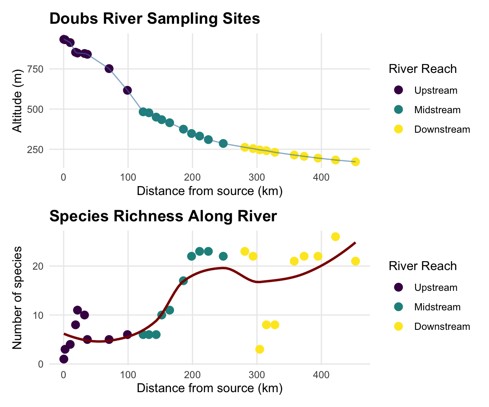
Lecture 18 - Multivariate Community Analysis
Introduction: Why NMDS?
The Problem with Ecological Community Data
- Ecological community data presents unique challenges for traditional statistical methods
- When sampling species abundances across sites
- encounter data that is sparse (most species are absent from most sites) - many zeros
- exhibits non-linear relationships between species and environmental gradients
- has no clear distributional form
- Principal Components Analysis (PCA) works beautifully for continuous environmental variables
- assumes linear relationships
- can leverage correlations between variables
- for species abundance data - assumptions often fail spectacularly
- NMDS offers a fundamentally different approach:
instead of trying to preserve exact distances or maximize variance explained
focuses on preserving the rank order of similarities between samples
makes it remarkably robust for ecological data.
Lecture 18: NMDS - Multivariate Community Analysis
Data - built in R and other places
| Code | Description of the variable |
|---|---|
| das | Distance from the source [km] |
| alt | Altitude [m a.s.l.] |
| pen | Slope [per thousand] |
| deb | Mean minimum discharge [m3s-1] |
| pH | pH of water |
| dur | Calcium concentration (hardness) [mgL-1] |
| pho | Phosphate concentration [mgL-1] |
| nit | Nitrate concentration [mgL-1] |
| amn | Ammonium concentration [mgL-1] |
| oxy | Dissolved oxygen [mgL-1] |
| dbo | Biological oxygen demand [mgL-1] |
| Code | Common Name (English) | Family |
|---|---|---|
| Chb | Bullhead | Cottidae |
| Tru | Brown trout | Salmonidae |
| Vai | Minnow | Cyprinidae |
| Loc | Stone loach | Balitoridae |
| Omb | Grayling | Salmonidae |
| Bla | Souffia | Cyprinidae |
| Hot | Common nase | Cyprinidae |
| Tox | Sofie | Cyprinidae |
| Van | Dace | Cyprinidae |
| Che | Chub | Cyprinidae |
| Bar | Barbel | Cyprinidae |
| Lot | Burbot | Lotidae |
| Spi | Spirlin | Cyprinidae |
| Gou | Gudgeon | Cyprinidae |
| Bro | Pike | Esocidae |
| Per | Perch | Percidae |
| Tan | Tench | Cyprinidae |
| Gar | Roach | Cyprinidae |
| Lam | Brook lamprey | petromizonidae |
Today’s Data: The Doubs River
About the Doubs River Dataset
- Study System:
- Doubs River, France
- 29 sites from upstream to downstream
- Collected by Verneaux (1973)
- Classic community ecology dataset
- Two Datasets:
- Environmental: 11 water quality variables
- Species: 27 fish species abundances (0-5 scale)
- Research Questions:
- How do fish communities change along the river?
- Which environmental factors drive community composition?
- Are there distinct community types?
Non-metric Multidimensional Scaling (NMDS)
- What is NMDS?
- Overview of NMDS:
- Purpose: Visualize dissimilarity between objects in 2D/3D space
- Goal: Preserve rank order of distances, not exact distances
- Method: Iterative re-positioning to minimize stress
- Output: Ordination plot showing relationships between samples
- Key Differences from PCA:
Uses dissimilarity matrices (not covariance)
Non-parametric (rank-based)
Better for non-linear ecological relationships
No assumption about data distribution
- Overview of NMDS:
- Before running NMDS - analyzing dissimilarity matrices not raw abundance data
dissimilarity matrix contains values for every pair of samples = “how different”
typically range from 0 (identical) to 1 (completely different).
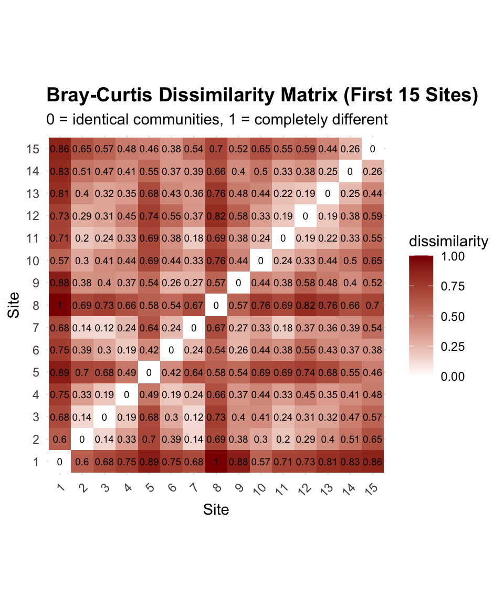
Why Bray-Curtis for Community Data?
- Bray-Curtis dissimilarity is standard choice for community data because it handles zeros appropriately (joint absences don’t contribute to similarity)
bounded between 0 and 1
weights by abundance (not just presence/absence) - ignores joint absences entirely
Similarity is based only on what’s actually present and shared between sites
performs well with sparse data
The formula is:
\[BC_{jk} = \frac{\sum_i |y_{ij} - y_{ik}|}{\sum_i (y_{ij} + y_{ik})}\]
Where \(y_{ij}\) is the abundance of species \(i\) at site \(j\)
- numerator sums up the absolute differences in abundance for each species between two sites
- denominator sums up the total abundance at both sites
- Bray-Curtis asks: “Of all the individuals at these two sites, what proportion would need to be moved to make the sites identical?”
The NMDS Algorithm
- What NMDS Actually Does
- NMDS tries to place samples in a low-dimensional space (usually 2D)
- so rank order of distances in ordination matches rank order of dissimilarities in original matrix
- Not your PCA which preserves exact distances (or variance)
- NMDS only cares about relative ordering:
- if site A is more similar to site B than to site C in the original data
- then A should be closer to B than to C in the ordination
How NMDS Works step by step
- The NMDS Algorithm:
- Calculate dissimilarity matrix between all pairs of sites
- Start with random configuration of points in 2D space
- Calculate stress = difference between original distances and ordination distances
- Move points to reduce stress
- Repeat until stress cannot be reduced further
- Try multiple random starts to avoid local minima
- Stress Values:
- < 0.1: Good representation
- 0.1-0.2: Acceptable
- > 0.2: Poor representation
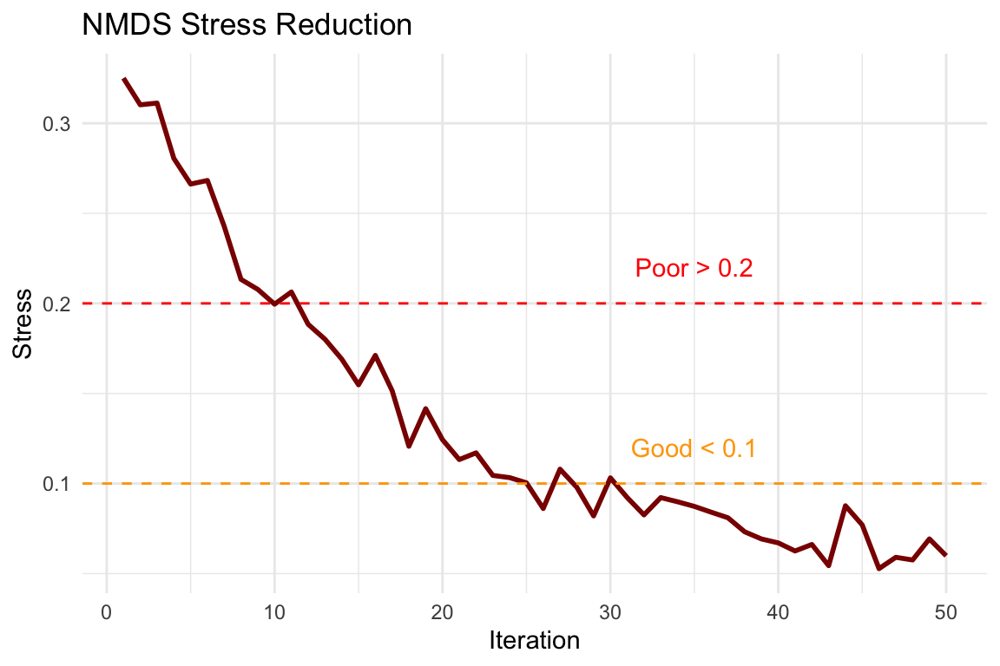
Understanding Stress
- What is Stress?
- Stress is key diagnostic for NMDS quality
- measures disagreement between original dissimilarities and distances in ordination
- stress is calculated by first ranking all pairwise dissimilarities
- then calculating corresponding distances in the ordination
- fitting a monotonic regression line to the relationship between these
- finally computing sum of squared deviations from this line.
- Lower stress means ordination better represents original relationships
- The Shepard Diagram: Visualizing Stress
- Shepard diagram (or stress plot) is primary diagnostic tool for NMDS
- shows relationship between original dissimilarities (x-axis) and ordination distances (y-axis) with a fitted monotonic line
- If NMDS is working well - points should closely follow the line
- Scatter indicates loss of information.

Interpreting the Shepard Diagram
- Shepard diagram
- each point represents one pair of sites
- x-axis shows their original Bray-Curtis dissimilarity
- y-axis shows their distance in the 2D ordination
- stepped line is a monotonic regression, = can only go up/stay flat not down
- because NMDS preserves rank order - “stress” = scatter around line
- Insights from our Shepard diagram:
- minimal scatter
- Stress Guidelines
- Clarke (1993) widely-used guidelines for interpreting stress
- <0.05 excellent representation w/no misinterpretation
- 0.05 - 0.10 good ordination - no real risk of false inferences
- 0.10 - 0.20 usable ordination but details at lower end interpreted cautiously
- 0.20 and 0.30 used with caution/potentially higher dimensions considered
- >0.30 = random placement.
- Clarke (1993) widely-used guidelines for interpreting stress
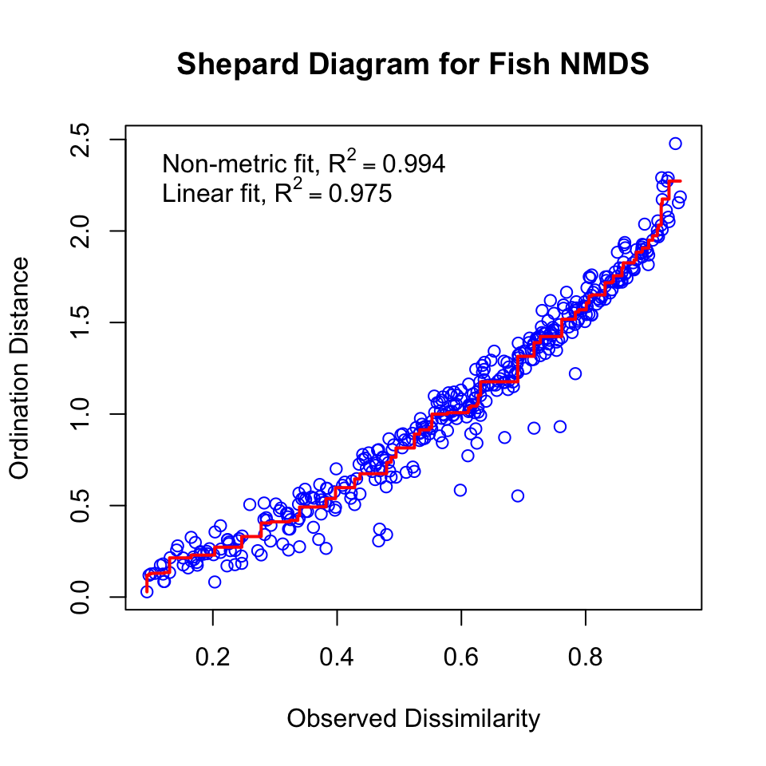
Choosing the Number of Dimensions
- How do we know 2 dimensions is enough?
- create a scree plot showing stress for different numbers of dimensions:
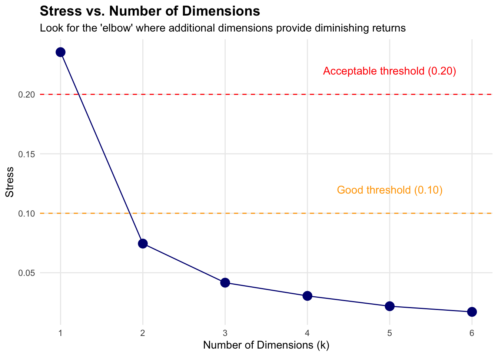
NMDS Assumptions
- NMDS Assumptions:
- ✅ Few assumptions:
- Samples are independent
- Dissimilarity measure is appropriate
- Sufficient data for stable solution
- ❌ No assumptions about:
- Data distribution
- Linear relationships
- Homoscedasticity
- Normality
- This makes NMDS very robust for ecological data!
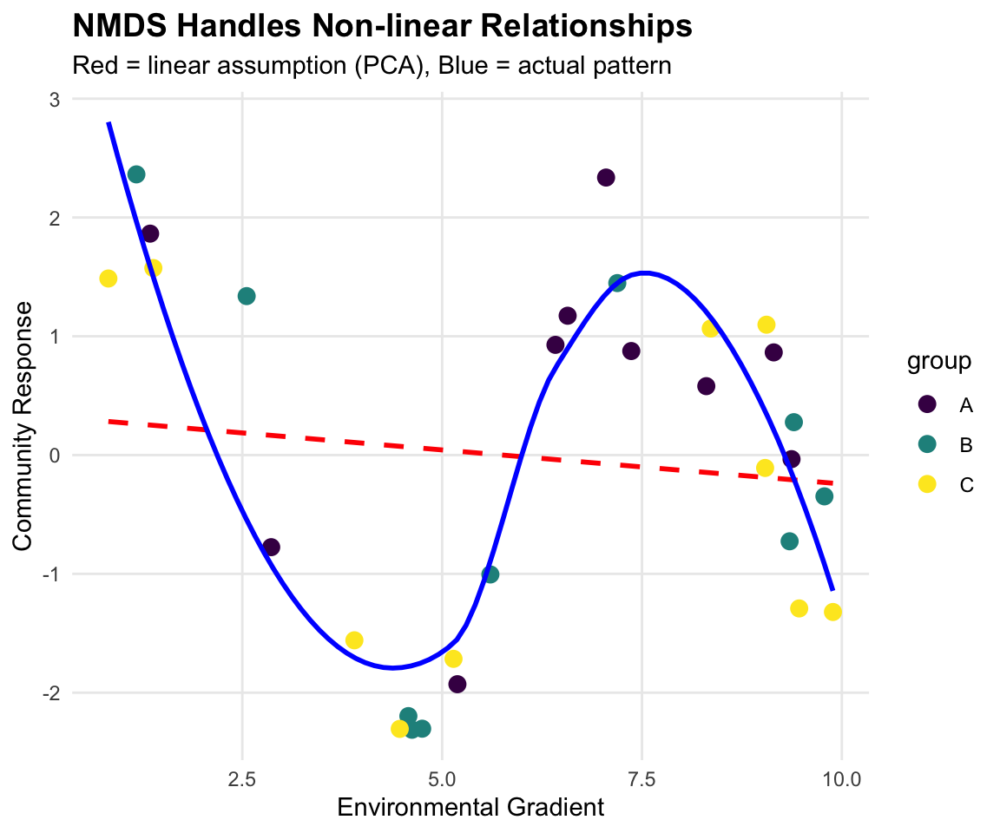
NMDS in Practice
Running NMDS on Fish Communities
# Prepare species data (remove site column)
spe_matrix <- doubs_spe %>% select(-site, -reach) %>% as.matrix()
# Add small constant to avoid issues with zeros
spe_matrix <- spe_matrix + 0.1
# Run NMDS with multiple random starts
set.seed(123)
fish_nmds <- metaMDS(spe_matrix, distance = "bray", # Bray-Curtis dissimilarity
k = 2, trymax = 100) # 2 dimensions + Maximum tries
## Run 0 stress 0.07449349
## Run 1 stress 0.1201175
## Run 2 stress 0.1201749
## Run 3 stress 0.1195174
## Run 4 stress 0.1201175
## Run 5 stress 0.1468615
## Run 6 stress 0.1395204
## Run 7 stress 0.09450578
## Run 8 stress 0.07460885
## ... Procrustes: rmse 0.02069815 max resid 0.09861179
## Run 9 stress 0.1273318
## Run 10 stress 0.1200159
## Run 11 stress 0.1273318
## Run 12 stress 0.07449349
## ... Procrustes: rmse 4.373445e-06 max resid 1.595028e-05
## ... Similar to previous best
## Run 13 stress 0.09450578
## Run 14 stress 0.140665
## Run 15 stress 0.07459993
## ... Procrustes: rmse 0.02014078 max resid 0.09796964
## Run 16 stress 0.1262615
## Run 17 stress 0.07460885
## ... Procrustes: rmse 0.02069823 max resid 0.09861196
## Run 18 stress 0.09134568
## Run 19 stress 0.07460885
## ... Procrustes: rmse 0.02069807 max resid 0.09861147
## Run 20 stress 0.07460885
## ... Procrustes: rmse 0.02069863 max resid 0.09861444
## *** Best solution repeated 1 timescat("Final stress:", round(fish_nmds$stress, 3))
## Final stress: 0.074NMDS in Practice
- Code Explanation:
fish_nmds <- metaMDS(spe_matrix, distance = "bray", # Bray-Curtis dissimilarityk = 2, trymax = 100) # 2 dimensions + Maximum tries
metaMDS(): Main NMDS function from vegan packagedistance = "bray": Bray-Curtis dissimilarity (best for abundances)k = 2: Two dimensions for plottingtrymax = 100: Try 100 random starting configurations- Small constant added to avoid zero-distance issues
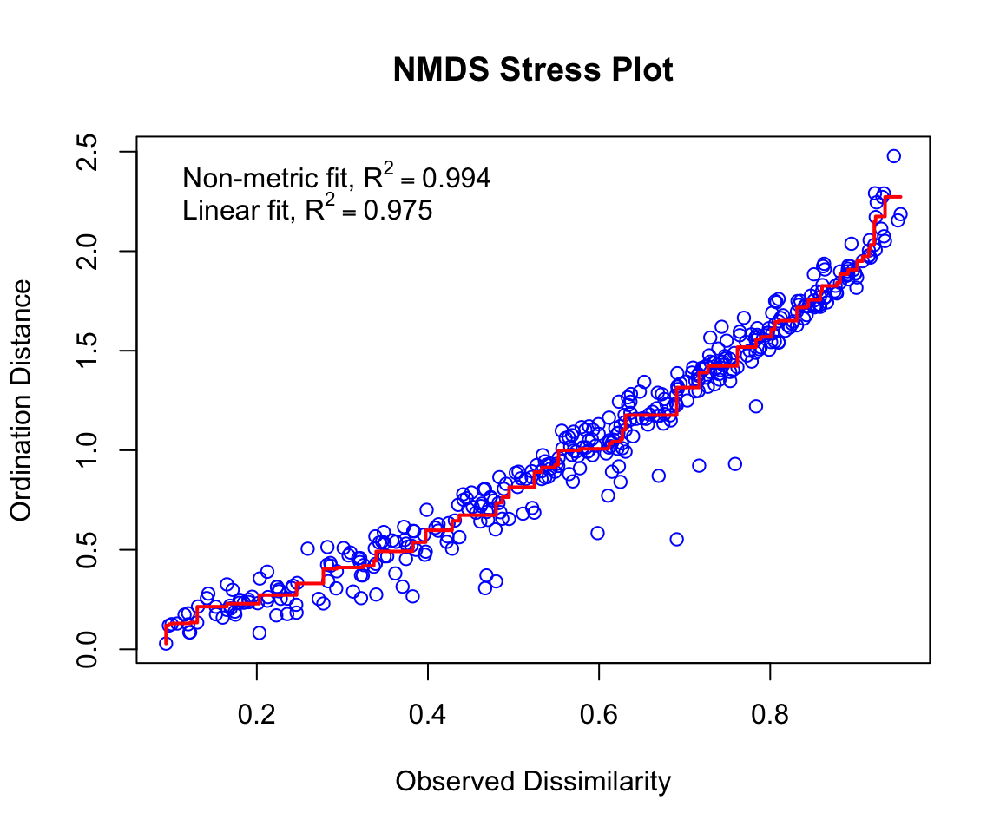
Interpreting NMDS Output
Understanding the Output:
- Stress = 0.074 : This is “excellent”
- Our 2D representation preserves the original distances well
- Convergent solutions: Found stable solutions from multiple tries
- Two dimensions: Axis 1 and Axis 2 have no inherent meaning (unlike PCA components)
- No eigenvalues: NMDS doesn’t calculate variance explained per axis
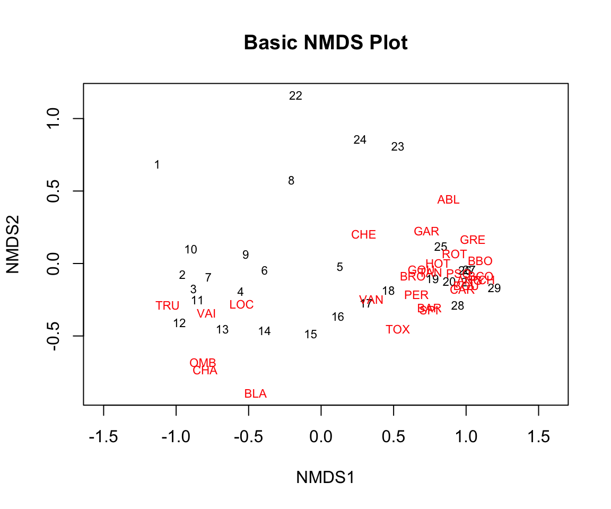
Creating Enhanced NMDS Plots
- What the NMDS Shows:
Clear separation between river reaches
Gradient pattern from upper to lower reaches
Sites within each reach are more similar to each other than to other reaches
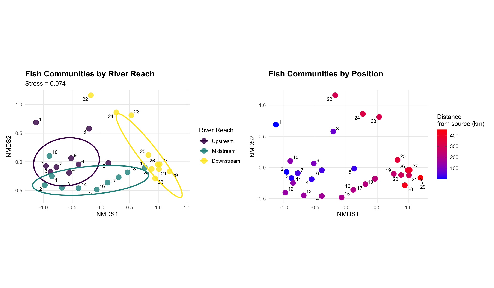
Different plot using the actual hull definitions from vegan
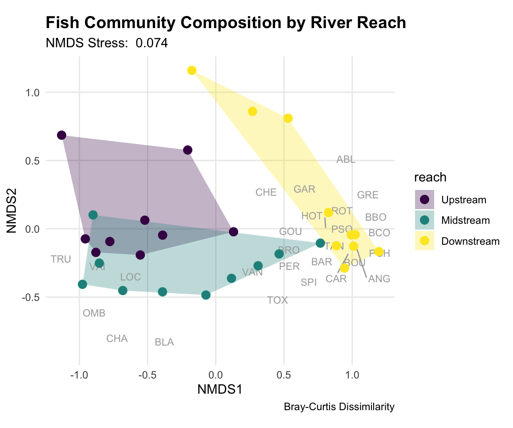
PERMANOVA: Testing Multivariate Differences
- What is PERMANOVA?
- PERMANOVA (Permutational Multivariate ANOVA):
- Purpose: Test whether groups have different multivariate centroids
- Method: ANOVA using distance matrices instead of raw data
- Advantage: No distributional assumptions
- Permutation: Creates null distribution by randomly reassigning group labels
- Think of it as:
Multivariate version of ANOVA
Uses distances between samples instead of means
Tests: “Are the centers of these groups different in multivariate space?” .
- PERMANOVA (Permutational Multivariate ANOVA):
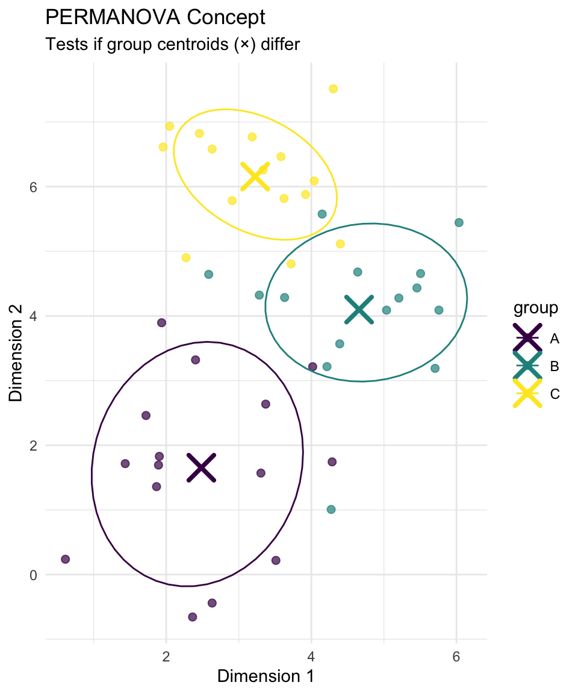
How PERMANOVA Works
- PERMANOVA Algorithm:
- Calculate distance matrix between all pairs of samples
- Calculate F-statistic based on distances:
- Between-group sum of squares
- Within-group sum of squares
- Permute group labels randomly (e.g., 999 times)
- Recalculate F-statistic for each permutation
- Compare observed F to permutation distribution
- P-value = proportion of permuted F ≥ observed F
- Why permutation?
No assumptions about data distribution
Creates empirical null distribution
Accounts for complex dependency structures
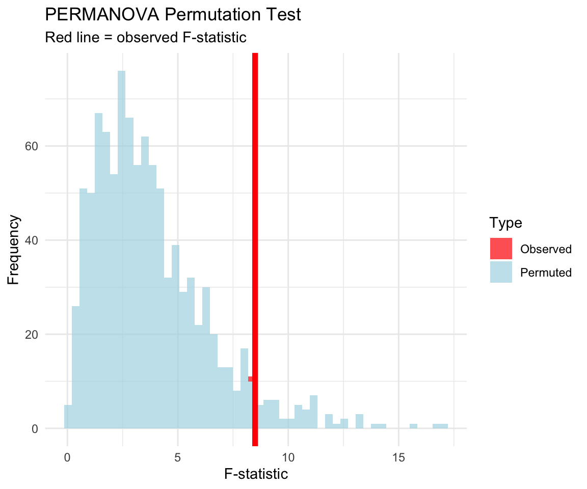
PERMANOVA Hypotheses
- Research Question: “Do fish communities differ significantly between river reaches?”
- Statistical Hypotheses:
- H₀: The centroids of fish communities are the same across all river reaches (Upper = Middle = Lower)
- H₁: At least one river reach has a different community centroid
- In practical terms: -
H₀: River position doesn’t affect community composition
H₁: River position significantly affects community composition
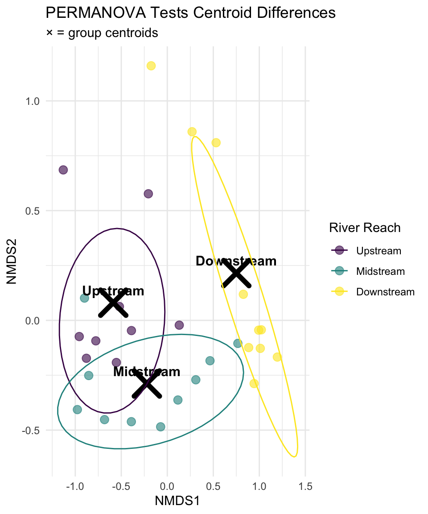
PERMANOVA Assumptions
- PERMANOVA Assumptions:
- ✅ Required:
- Independence: Samples are independent
- Exchangeability: Under H₀, observations are exchangeable between groups
- Homogeneity of dispersion: Groups have similar multivariate spread
- ❌ Not required:
- Normality or other distribution
- Linearity
- Checking Assumptions:
- Use
betadisper()to test homogeneity of dispersion - If violated, PERMANOVA is testing dispersion differences and not location differences
- Use
## Homogeneity of dispersion test p-value: 0.8037- vegan::betadisper() converts bray-curtis to euclidean distances to calculate distance from sample to center
- Principal Coordinates Analysis (PCoA) - ordination for distances between samples in a low-dimensional, Euclidean space
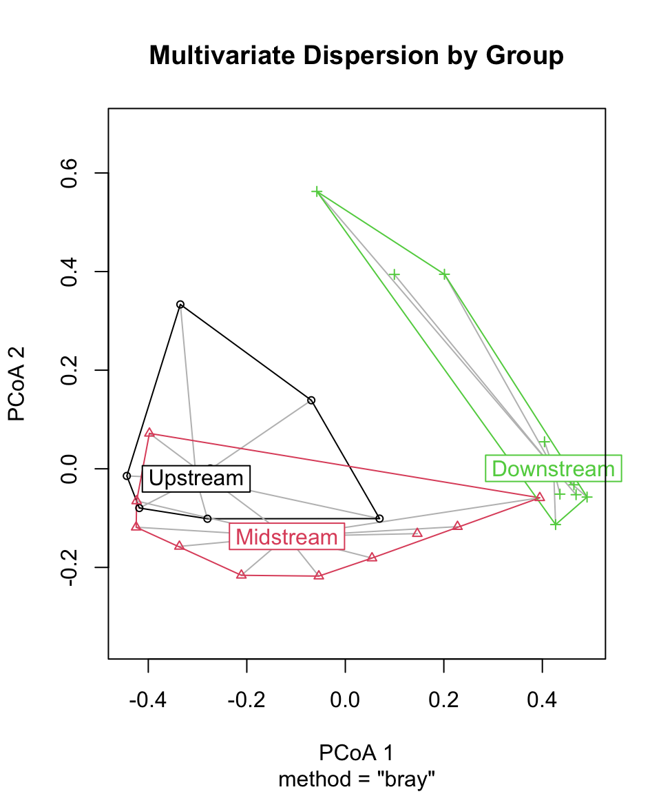
Running PERMANOVA
- PERMANOVA on Fish Communities
- Line-by-line interpretation:
- reach: The factor being tested (river reach)
- Df = 2: Degrees of freedom (3 groups - 1)
- SumOfSqs: Between-group sum of squares
- R2: Proportion of variance explained by reach
- F: F-statistic (ratio of between/within group variation)
- Pr(>F): P-value from permutation test
- Line-by-line interpretation:
## Permutation test for adonis under reduced model
## Permutation: free
## Number of permutations: 999
##
## adonis2(formula = spe_matrix ~ reach, data = doubs_env, permutations = 999, distance = "bray")
## Df SumOfSqs R2 F Pr(>F)
## Model 2 2.3631 0.42634 9.6614 0.001 ***
## Residual 26 3.1798 0.57366
## Total 28 5.5429 1.00000
## ---
## Signif. codes: 0 '***' 0.001 '**' 0.01 '*' 0.05 '.' 0.1 ' ' 1- What this means:
Significant result (p < 0.001): We reject H₀
River reach explains substantial variation in fish communities
Fish communities differ significantly between river reaches
Very few permutations gave F ≥ observed F
Pairwise PERMANOVA Tests
- Interpretation of Pairwise Results:
All pairwise comparisons are statistically significant even after Bonferroni correction
Upper vs Lower shows the strongest difference (highest F-statistic)
Downstream comparisons to up and middle explains a substantial portion of variance (R² > 0.3)
Biological interpretation: Fish communities change progressively down the river
## pairs Df SumsOfSqs F.Model R2 p.value p.adjusted
## 1 Upstream vs Midstream 1 0.4068962 3.434528 0.1680747 0.021 0.063
## 2 Upstream vs Downstream 1 1.8495110 15.490360 0.4767679 0.001 0.003
## 3 Midstream vs Downstream 1 1.2829784 9.972485 0.3565105 0.001 0.003
## sig
## 1
## 2 *
## 3 *Visualizing PERMANOVA Results
Results:
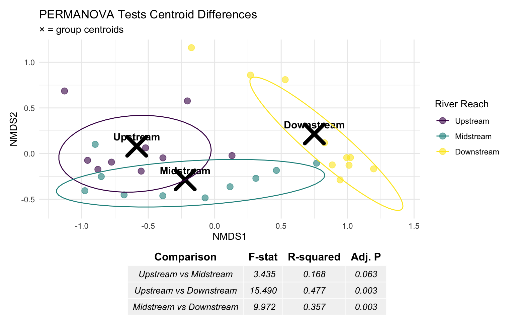
ANOSIM: Analysis of Similarities
- ANOSIM (Analysis of Similarities):
- Purpose: are samples w/in groups are more similar than samples between groups
- Method: Based on rank dissimilarities
- Statistic: R-statistic ranging from -1 to +1
- Interpretation:
R ≈ 1: Groups are completely separated
R ≈ 0: Groups are indistinguishable
R < 0: More dissimilarity within groups than between
- Differences from PERMANOVA:
ANOSIM uses ranks of distances
PERMANOVA uses actual distances
ANOSIM is more robust but less powerful
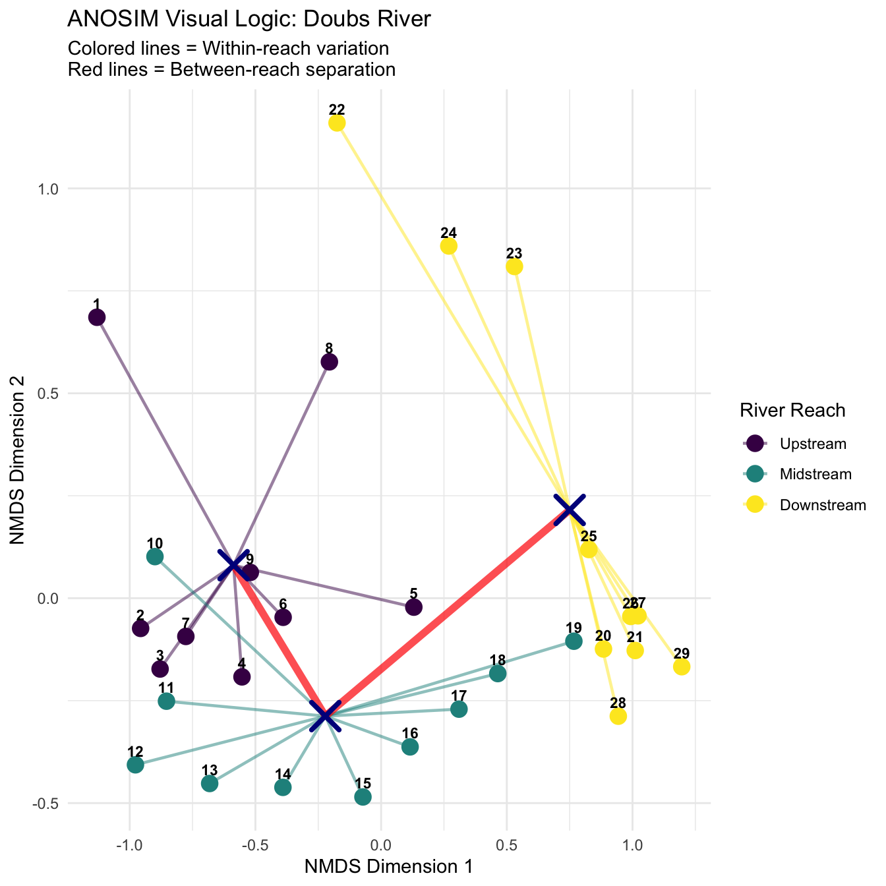
How ANOSIM Works
- ANOSIM Algorithm:
- Calculate dissimilarity matrix between all samples
- Rank all dissimilarities from smallest to largest
- Calculate mean rank of within-group dissimilarities (r̄w)
- Calculate mean rank of between-group dissimilarities (r̄b)
- Compute R-statistic: R = (r̄b - r̄w) / (N(N-1)/4) where N = total number of samples
- Permute group labels and recalculate R many times
- P-value = proportion of permuted R ≥ observed R
- R-statistic interpretation:
R = 1: Perfect separation
R = 0: No separation
R = -1: More similar between groups than within
# Run ANOSIM
anosim_result <- anosim(spe_matrix, doubs_env$reach,
distance = "bray", permutations = 999)
# Display results
anosim_result
##
## Call:
## anosim(x = spe_matrix, grouping = doubs_env$reach, permutations = 999, distance = "bray")
## Dissimilarity: bray
##
## ANOSIM statistic R: 0.5082
## Significance: 0.001
##
## Permutation: free
## Number of permutations: 999Running ANOSIM
- ANOSIM Results Interpretation:
- R = 0.5082 : This indicates “good” separation between groups
- **p-value = 0.001 - significant result
- Biological meaning: Fish communities well-separated between river reaches, with communities within each reach being much more similar to each other than to communities in other reaches
- “Within” box is clearly lower than the “Between” box
sites within same river reach tend to be more similar to each other (lower dissimilarity ranks) than sites in different reaches (higher dissimilarity ranks)
R statistic of 0.51 quantifies this separation
- there’s clear differentiation, but with some overlap.
Interpreting R:
- R = 1 - Complete separation
- all within-group dissimilarities smaller than between-group dissimilarities
- R > 0.75 Well separated
- R > 0.5 Separated, but overlapping
- R > 0.25 Barely separated
- R ≈ 0 No difference between groups
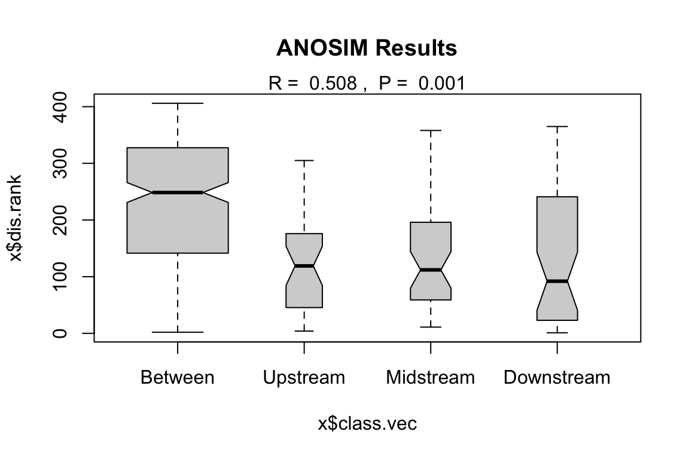
- R = 1 - Complete separation
ANOSIM vs PERMANOVA Comparison
## # A tibble: 2 × 6
## Method `Test Statistic` `P-value` Interpretation `What it tests` Approach
## <chr> <chr> <dbl> <chr> <chr> <chr>
## 1 PERMANOVA F = 9.66 0.001 Groups have dif… Differences in… Uses ac…
## 2 ANOSIM R = 0.508 0.001 Excellent group… Overlap betwee… Uses ra…ANOSIM vs PERMANOVA Comparison
- When to use which:
- PERMANOVA:
More powerful for detecting differences
Better for complex experimental designs
Can handle interactions and covariates
Preferred for most applications
- ANOSIM:
- More robust to outliers
- Simpler interpretation
- Good for initial exploratory analysis
- Useful when distributions are very non-normal
- PERMANOVA:
PERMANOVA vs ANOSIM
- What’s the Difference? Three Scenarios
- Both methods test whether groups differ, but they ask different questions:
- PERMANOVA asks: Do the group centroids differ in location?
- Uses actual squared distances and partitions variance like ANOVA
- ANOSIM asks: Are within-group dissimilarities smaller than between-group?
- Uses ranked distances to compares rank distributions
- PERMANOVA asks: Do the group centroids differ in location?
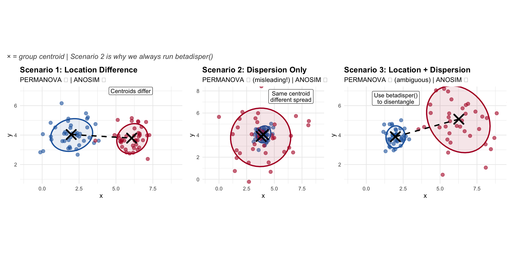
Scenario 2 is Key!
- The Problem:
- Groups A and B have the same centroid (same average community)
- But Group B is much more variable (spread out)
- PERMANOVA will detect this as “significant”!
- Why?
- PERMANOVA tests distances from points to centroids
- More spread = larger distances = detected as “different”
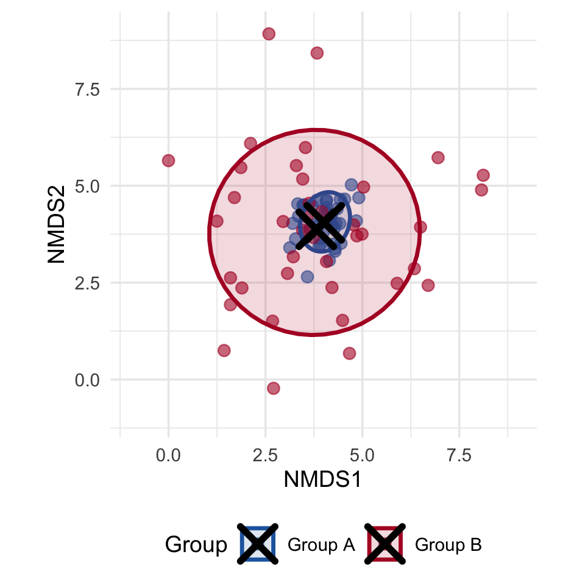
Dispersion test for PERMANOVA
- Solution: Always run
betadisper()before interpreting PERMANOVA!- What PERMANOVA “Sees”
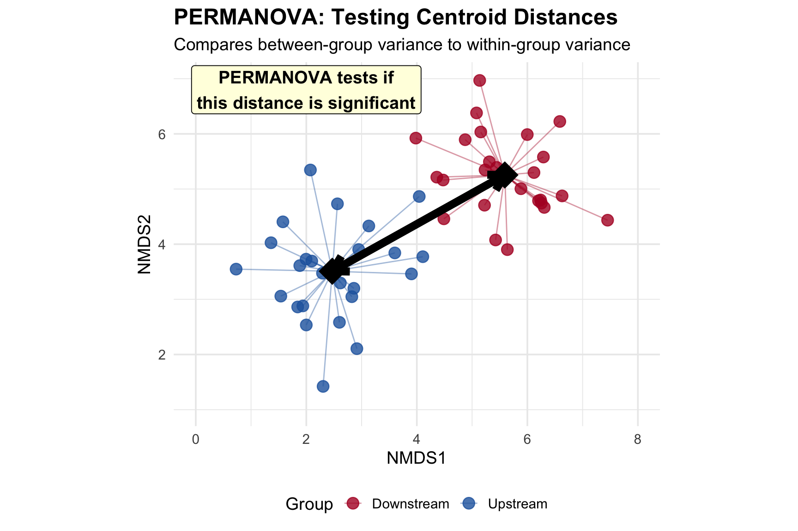
What ANOSIM “Sees”
- This is different
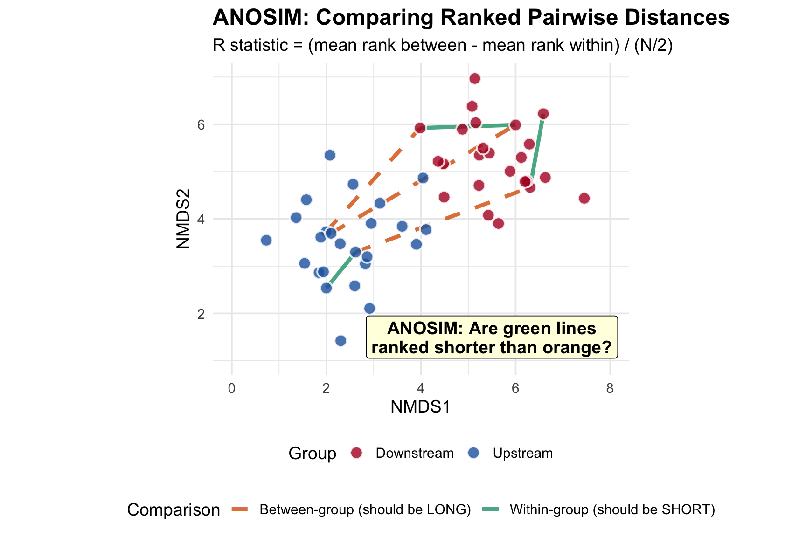
Side-by-Side Comparison of PCA and ANOSIM
Comparison
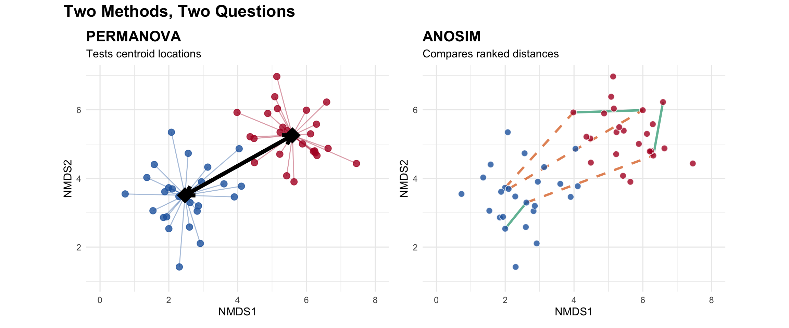
Environmental Drivers
- Environmental Vector Results:
- Which Environmental Variables Matter?
- Significant variables (p < 0.05):
- What this means:
- variables significantly correlate w/ comm. comp
- explain spatial arrangement of sites in NMDS
- arrows show direction of max change for env. variables
- Longer arrows = stronger correlations with ordination
- Arrow direction = sites have high vs. low values of variable
- distance from source (das) and altitude (alt) point opp. directions
- (expected - altitude decreases as distance increases)
- Oxygen (oxy) decreases downstream
- BOD (dbo) increases downstream = more org. pollution
##
## ***VECTORS
##
## NMDS1 NMDS2 r2 Pr(>r)
## das 0.98098 0.19411 0.7284 0.001 ***
## alt -1.00000 -0.00057 0.5650 0.001 ***
## pen -0.61902 0.78538 0.2546 0.026 *
## deb 0.99744 -0.07146 0.5701 0.001 ***
## pH -0.09760 -0.99523 0.0746 0.374
## dur 0.99967 -0.02575 0.2960 0.008 **
## pho 0.22860 0.97352 0.5228 0.001 ***
## nit 0.66665 0.74537 0.5200 0.001 ***
## amm 0.19902 0.98000 0.5471 0.002 **
## oxy -0.46402 -0.88583 0.7826 0.001 ***
## dbo 0.20211 0.97936 0.6883 0.001 ***
## ---
## Signif. codes: 0 '***' 0.001 '**' 0.01 '*' 0.05 '.' 0.1 ' ' 1
## Permutation: free
## Number of permutations: 999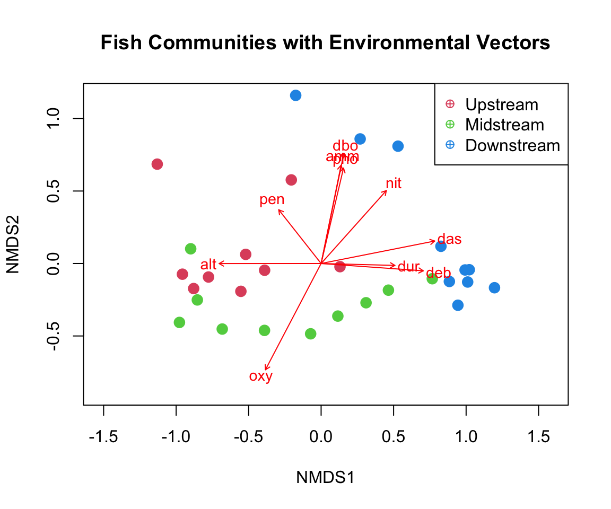
Environmental Gradient Analysis
- Key Environmental Patterns:
- Distance from source (das): Strong correlate with community change
- Oxygen (oxy): Decreases downstream, affects fish communities
- Biological oxygen demand (dbo): Increases downstream (pollution indicator)
- Altitude (alt): Decreases downstream, associated with temperature changes
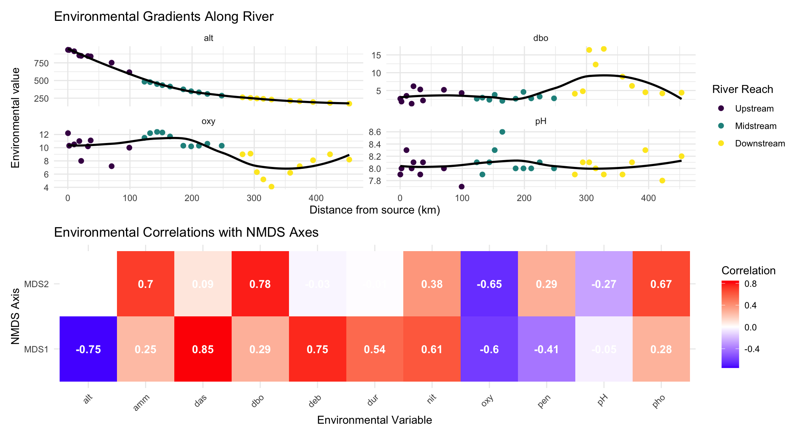
Summary and Conclusions
- Key Findings
- NMDS Results:
- Stress =: Excellent representation
- Clear gradient from upper to lower river reaches
- Within-reach similarity greater between-reach similarity
- PERMANOVA Results:
- Highly significant differences between reaches (p < 0.001)
- River reach explains substantial variance in community composition
- All pairwise comparisons significant after correction
- ANOSIM Results:
- R = 0.508 p = 0.001 : Excellent separation
- Confirms PERMANOVA findings with different approach
- Strong within-group coherence
- R = 0.508 p = 0.001 : Excellent separation
- Environmental Drivers:
- Distance from source: Primary gradient
- Dissolved oxygen: Decreases downstream
- Biological oxygen demand: Increases downstream
- Multiple correlated factors drive community change
- Biological Interpretation:
- River continuum concept supported
- Progressive community change from source to mouth
- Environmental filtering shapes community assembly
- Pollution gradient evident in lower reaches
Take-Home
- NMDS (Non-metric Multidimensional Scaling):
- Visualizes community dissimilarity in 2D/3D
- Preserves rank order of distances (non-metric)
- No distributional assumptions
- Stress < 0.2 for acceptable solutions
- Great for exploring ecological gradients
- PERMANOVA (Permutational MANOVA):
- Tests for differences in group centroids
- Uses distance matrices, not raw data
- No distributional assumptions
- Can handle complex designs
- Check dispersion homogeneity assumption
- ANOSIM (Analysis of Similarities):
- Tests group separation using rank distances
- R-statistic: -1 (no separation) to +1 (complete)
- More robust to outliers than PERMANOVA
- Simpler but less powerful
- Good for exploratory analysis
- Environmental Drivers:
- Use
envfit()to correlate environment with ordination - Identifies which variables explain community patterns
- Helps understand ecological mechanisms
- Essential for management implications
- Use